Figuras
Todas as figuras da dissertação, organizadas por capítulo.
Capítulo 1 — Introdução
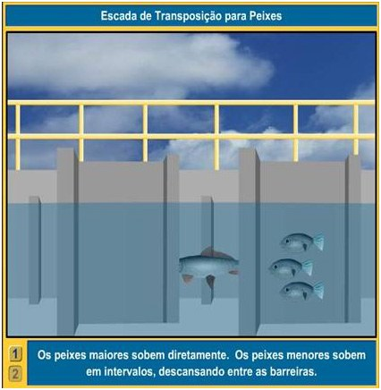
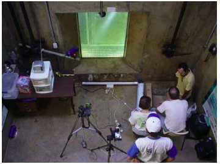
Figura 1.1. (a) Ilustração da Escada de peixes - (“UHE IgarapavaConsórcio da Usina Hidrelétrica de Igarapava”, 2020), (b) sala abaixo do nível d’água (Morais et al., 2005).
Ver no capítulo →Capítulo 3 — Método Proposto

Figura 3.1. Método proposto recebe o quadro atual e o quadro no instante anterior . O resultado da concatenação gera um volume de entrada para a VGG-19. A saída desta arquitetura consiste em um mapa de características inicial. Esse mapa alimenta dois ramos que são responsáveis por realizar as predições do mapa de densidade e de vetores de deslocamento. Cada ramo é composto por uma série de estágios que refinam a suas predições. Ambos ramos compartilham as informações para auxiliar na estimação.
Ver no capítulo → Imagem Original
Imagem Original mapa de características
mapa de característicasFigura 3.3. Exemplo de um mapa de características predito pela VGG-19.
Ver no capítulo → Imagem Original
Imagem Original σ = 1.5
σ = 1.5 σ = 2.5
σ = 2.5Figura 3.4. Exemplo de uma cena e seu mapa de confiança correspondente para diferentes valores de .
Ver no capítulo →
Figura 3.5. Ilustração de um vetor para um objeto em quadro.
Ver no capítulo →Figura 3.6. Exemplos das localizações nos vetores
Ver no capítulo →


Figura 3.7. Ilustração dos vetores estimados pelo segundo ramo apresentado, para cada pixel de cada objeto.
Ver no capítulo →
Figura 3.8. Exemplo do mapa de confiança em três dimensões.
Ver no capítulo →Capítulo 4 — Experimentos e Resultados
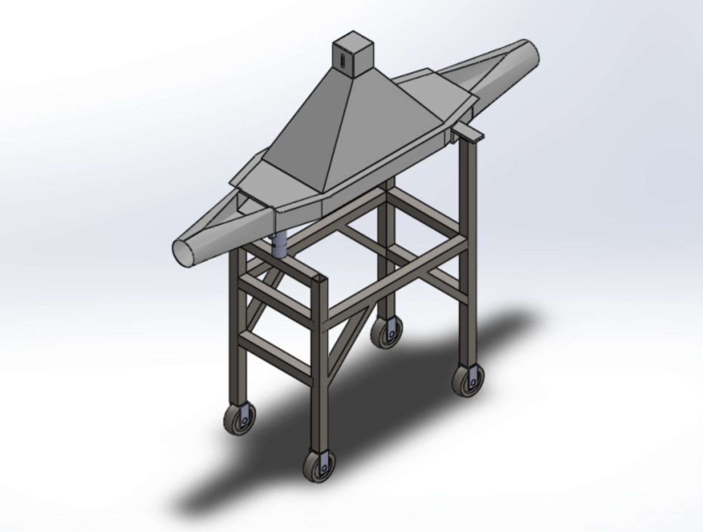
Figura 4.1. Suporte para Captura das imagens proposta por (Silva Oliveira Junior, 2019)
Ver no capítulo →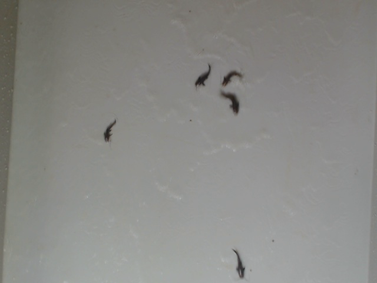
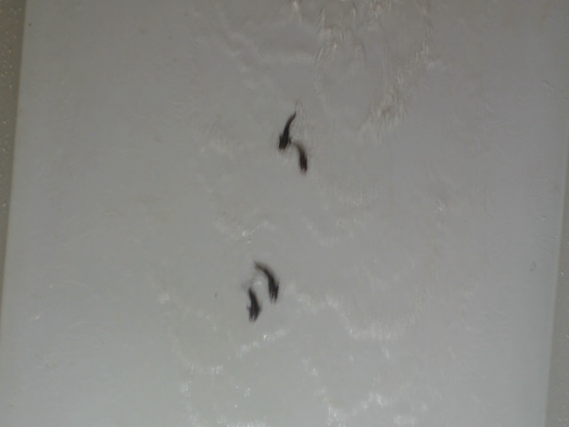
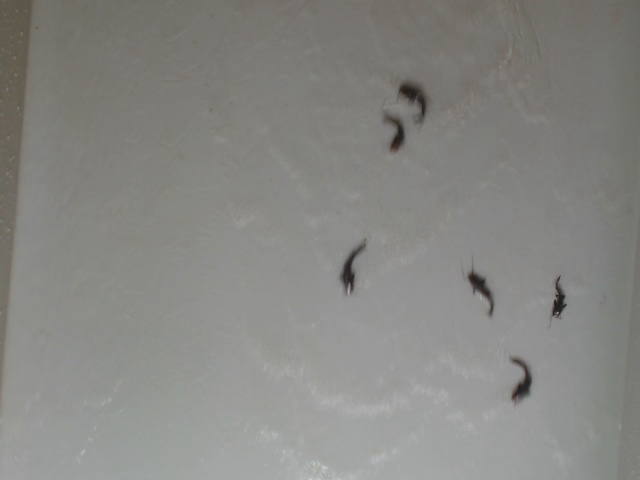
Figura 4.2. Imagens retiradas do conjunto de Treinamento (Silva Oliveira Junior, 2019).
Ver no capítulo →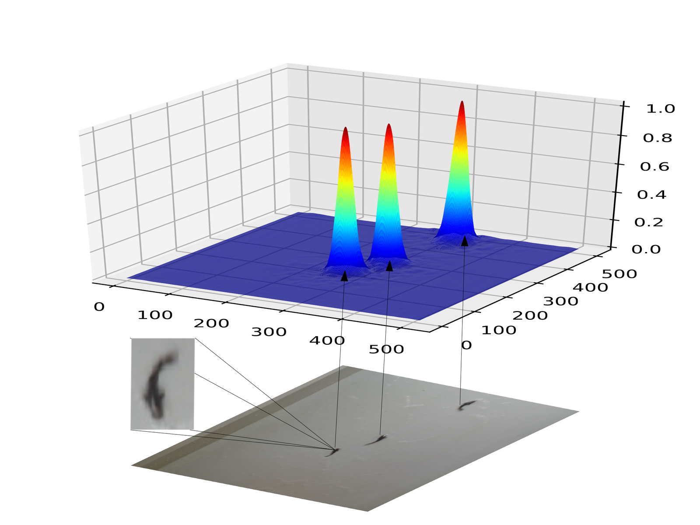
Figura 4.3. Ilustração do Heatmap obtido do frame 147 do vídeo número 6, predito pelo modelo treinado por 100 épocas.
Ver no capítulo →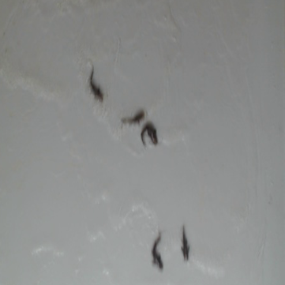
Imagem Original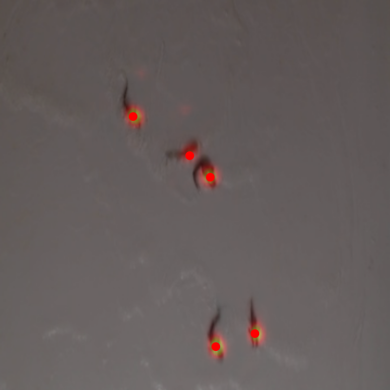
Mapa de densidade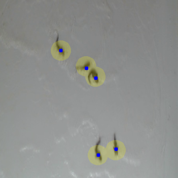
Predições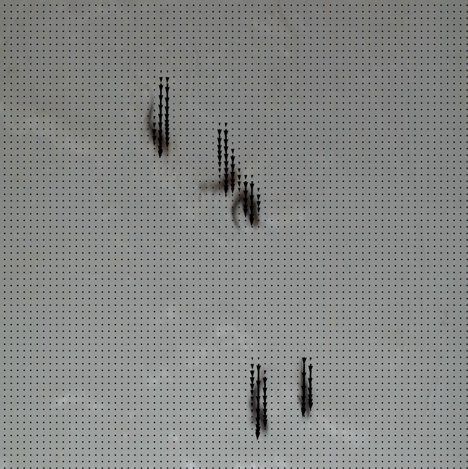
Estimativa dos Vetores de DeslocamentoFigura 4.4. Exemplos dos resultados visuais obtidos para o quadro 30 do vídeo 09. A Figura (a) mostra a imagem original, (b) o mapa de densidade, (c) as predições e (d) a estimação dos vetores.
Ver no capítulo →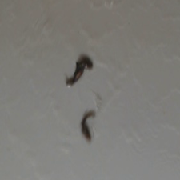
Imagem Original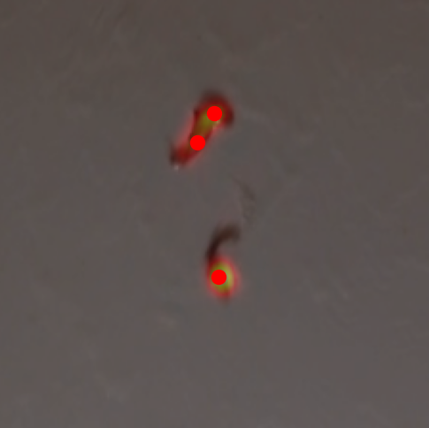
Ground Truth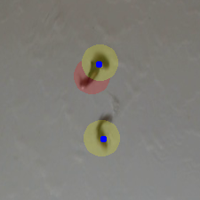
Predições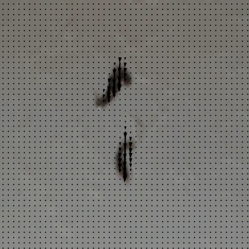
Estimativa dos Vetores de DeslocamentoFigura 4.5. Exemplos dos resultados visuais obtidos para o quadro 270 do vídeo 11. A Figura (a) nos mostra a imagem original, (b) o mapa de densidade, (c) as predições e (d) a estimação dos vetores.
Ver no capítulo →Capítulo 5 — Conclusões
 quadro 187
quadro 187 quadro 188
quadro 188Figura 5.1. Exemplos dos peixes extremamente próximos que se movem uniformemente. Imagens do vídeo 06, quadro 187 e 188.
Ver no capítulo → quadro 4810
quadro 4810 quadro 6253
quadro 6253Figura 5.2. Amostra do próximo banco de imagens a ser testado - vídeo 203. .
Ver no capítulo →